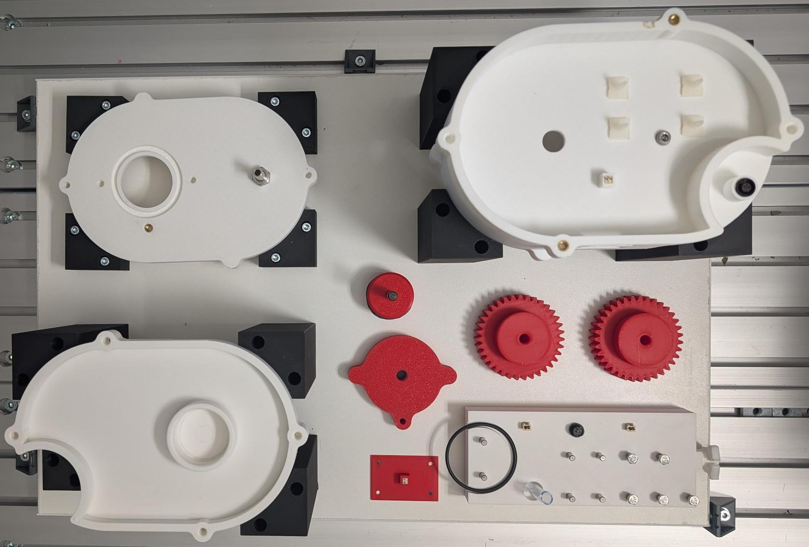
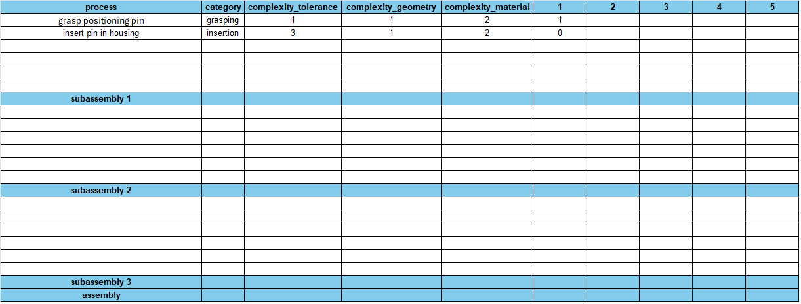

This document explains the benchmark process, its rules for the procedure and gives an
instruction for evaluation. The scoring sheets can be filled out manually or digitally.
The benchmark is built for comparing assembly processes on a realistic, industrial setup
completed by a robot, e.g. an UR5e. The benchmark includes subassemblies and numerous of
different processes. 46 tasks are fulfilled in one assembly run. The design is inspired from an
electric drive for e-bikes. The goal is to review and evaluate the assembly time and the
performance of the robot program related to single processes and complete assemblies. As a
result, it can identify strengths and potentials of robots in various assembly tasks.
Rules and constraints:
The benchmark and its components must be in the starting position as it is shown below.
A complete run of the assembly process must be executed by one gripper. It is not allowed to
change it during the procedure.
Each assembly task rewards a certain number of points upon successful completion, depending on its complexity.
To fully evaluate the benchmark, the robot will complete the assembly process 5 times. All
processes are expected to be performed by the robot itself. After a failed attempt at a
particular process, manual assistance by a person is permitted, but the timer will continue and
not be paused.

Scoring:
[download benchmark_scoring_sheet.xlsx]
→ benchmark_protocol_template.xlsx
→ evaluation_script.py
Results of the assembly tasks have to be noted in the benchmark protocol using a binary value of 1 for success and 0 for failure.
The evaluation script provided can be used for easy evaluation, which evaluates the reliability and overall score for each individual assembly category.
The protocol is structured in such a way that it can be used for the evaluation of any assembly.
When doing so, you have to add rows beneath the table header with corresponding names for the assembly processes in the column "process".
Furthermore, for each process, a category has to be defined, like grasping, screwing, insertion, reorient etc.
Finally, the complexity of each process has to be defined using our proposed taxonomy.
When using subassemblies, simply add a row called "subassembly N" beneath the related processes, where N is the nth subassembly, starting to count at 1.
For each repetition, add an extra column after "complexity_material".
